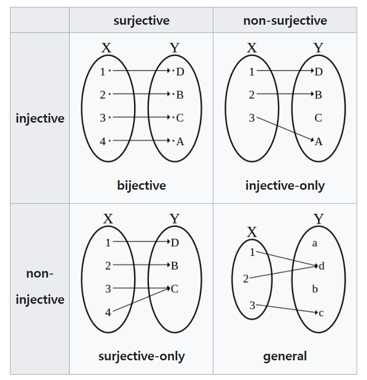

흐름정리
- 앞선 포스팅에서 르벡메져를 도입하여 무리수 집합의
길이는 \(2\pi\) 유리수 집합의 길이는 0이였었습니다. - 그러나 왜 이렇게 되는지에 대한
직관은 전혀 얻을 수 없고 받아들여야 했습니다. - 이번포스팅에서는 이는 집합간의
전사,단사,전단사함수가 존재유무를 통해서 무한집합들간의cardinality(유한집합에서의 크기 개념)를 비교하고자 합니다. - 이를 통해 유리수집합의 길이가 무리수집합의 길이보다 왜 작은지
직관을 얻을 수 있습니다.(그렇다고 모순이 완전히 사라지지는 않습니다. 르벡메져를 도입해도 여전히 확률을 모순없이 정의하기에는 부족합니다.)
cardinality
집합의 cardinality(간단히,크기)는 집합의 element가 몇 개인지 알려주는 측도(measure)입니다.
\(\text{The cardinality of a set A} = |A| = \text{card}(A)\)
유한집합 \(A = {2,4,6} \Rightarrow |A| = 3\)
무한집합 \(A = \{1,2,3,\dots\}\)의 경우 cardinality는 어떻게 구하고 비교할 수 있을까요?
이는 자연수집합의 크기를 \(\aleph_0\)로 정해놓고 또다른 무한집합의 크기를 자연수 집합과 비교하여 가능합니다.
Bijection,Injection,Surjection
- 무한집합간의 크기비교는 bijection(전단사함수),injection(단사함수),surjection(전사함수)와
cardinality와의 관계에 대한 증명된 명제들을 통해서 가능합니다. - 먼저 여기서는
Bijection,Injection,Surjection을 소개합니다.

Injective function
domain에 속하는서로다른 모든 두 원소가codomain에 속하는서로다른 두 원소에mapping될 때Injection function입니다.- 암기(입력이 다르면 출력이 다르다)
- 느낌(화살표가 쫙 펴지는 느낌이다.)
surjective function
codomain에 속하는모든 원소가domain에 속하는 원소에적어도 하나의 mapping을 받을 때surjective function입니다.- 암기1:domian의 image(상)인 치역이 공역과 같습니다.
- 암기2:공역의
모든 원소가역상(inverseimage)이 존재합니다. - 느낌 : 화살표가 쫙 모이는 느낌
bijective function
- codomain에 속하는 임의의,모든 원소가 domain에 속하는 정확히 하나의 원소에만 mapping되는 경우 bijective function이라고 한다.
- injective이며 동시에 surjective인 function이다.
용어 정리(헷갈림)
- injective = 단사 = one-to-one, injective function = injection = 단사함수
- surjective = 전사 = onto, surjective function = surjection = 전사함수
- bijecitve = 전단사 = one-to-one and onto , bijective function = bijection = 전단사함수
함수의 종류와 Cardinality와의 관계
- 위의 사실들은 유한집합에 대해서 생각해보면 자명한 사실들입니다.
- 우리는 이를 무한집합에 확장하여 적용함으로서 무한집합간의
cardinality를 비교할 수 있습니다.
정리
- 유한집합에서 두 집합간의 크기의 비교는 두 집합간에 존재할 수 있는 함수가 어떤 함수인지를 통해서 가능합니다.
- 이를 무한집합에서 적용하여 두 집합간의 크기비교를 해보고자 합니다.(다음 포스팅!)